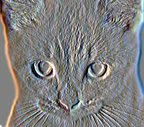
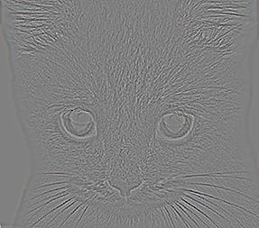
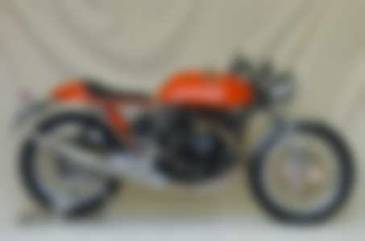
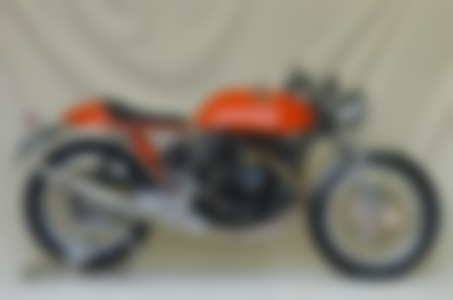
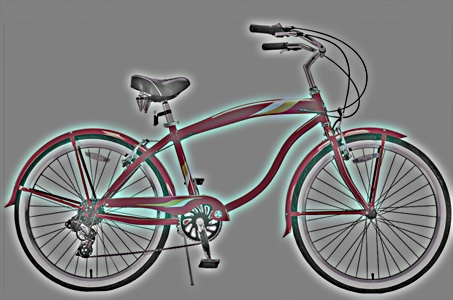
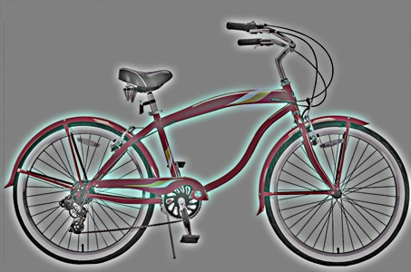
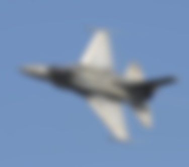
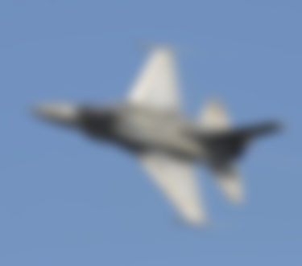
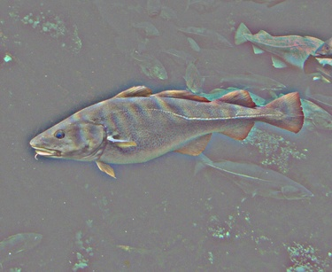
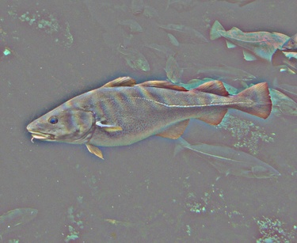

Project 1: Image Filtering and Hybrid Images
The my_imfilter.m code applies an image filter on the image using the following steps:
- Pad the image by reflecting the border pixels - Given that the filter dimensions (let's say m × n) are odd we will have to pad the image with ⌊m/2⌋ pixels on the top and bottom and ⌊n/2⌋ pixels on the left and right. I decided to pad the image by mirror reflecting the pixels along the border. This avoided the annoying effect of blackish border in the output image when padding with zeros.
- Reshape the padded image if it is a grayscale image - I decided to run 3 nested for loops one along each dimension to fill out the output image pixel by pixel. For this purpose in case of grayscale image I reshaped the image such that its third dimension is 1.
- Initialize output image - The output image is initialized with the same dimension as that of the input image (let's say h × w × d) and filled with all zeros.
- Apply filter - The filter is applied using three nested for loops. The code is as shown below:
for i = 1+m:h+m
for j = 1+n:w+n
for k = 1: d
output_im(i-m, j-n, k) = sum(dot(padded_im(i-m:i+m, j-n:j+n, k), filter));
end
end
end
Here m and n are filter_height/2 and filter_width/2 respectively. For the height I start from 1+m to h+m where h is height of the input image. The output image's pixel indices range from 1 to h whereas for padded image it ranges from 1 to h+2m as m pixels are padded to both top and bottom. Therefore, I assign indices from i-m in the output image and from the current index 'i' take m pixels in both direction in the padded image. Similarly for the width and we also choose the third dimension we are working with. I take the dot product between this window extracted from the padded image and the filter. MATLAB returns the dot product column wise so there is a need to sum up the results to obtain the output image's pixel value.
- Reshape back if grayscale image and return the output - Reshape the output to two dimensions in case of grayscale image by removing the 1 from the third dimension and return the output image.
The results obtained by applying the various filters using my_imfilter.m are shown below:
Filters applied (from left to right and top to bottom): identity, box, gaussian, sobel, discrete laplacian, high pass alternative


|



|


 

 

 



 
